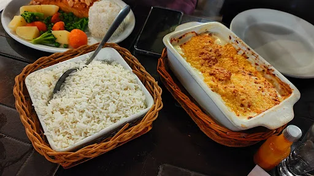
Cuiabá · tradição e sabor à mesa
Uma experiência à mesa
marcada pelos detalhes.
Bacalhau, carnes, risotos, massas, petiscos e uma seleção de bebidas em um ambiente acolhedor, elegante e repleto de personalidade.
4,6
★★★★★
1.450 avaliações publicadas no GoogleHorário de hoje11:00 — 16:00
O DiPARMA
Tradição e personalidade.
Acolhimento em cada detalhe.
O DiPARMA reúne a atmosfera acolhedora de uma cantina e de uma choperia em um salão marcado por madeira, rótulos, louças e elementos que preservam a memória da casa. O resultado é um ambiente autêntico, confortável e cuidadosamente composto.
Cardápio variado
Vinhos, chopp e coquetéis
Entrada acessível
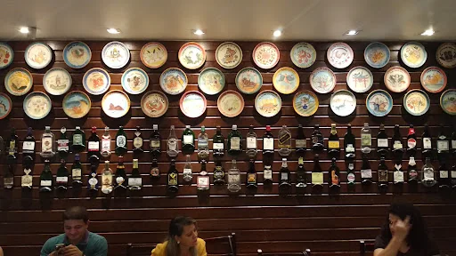
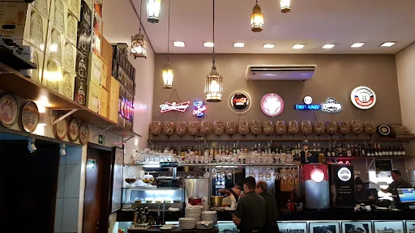
DIPARMACUIABÁ
Sabores
Uma seleção pensada
para diferentes momentos.
De receitas reconfortantes a pratos pensados para compartilhar. Navegue pelas opções com o toque, o arraste ou pelas setas do carrossel.
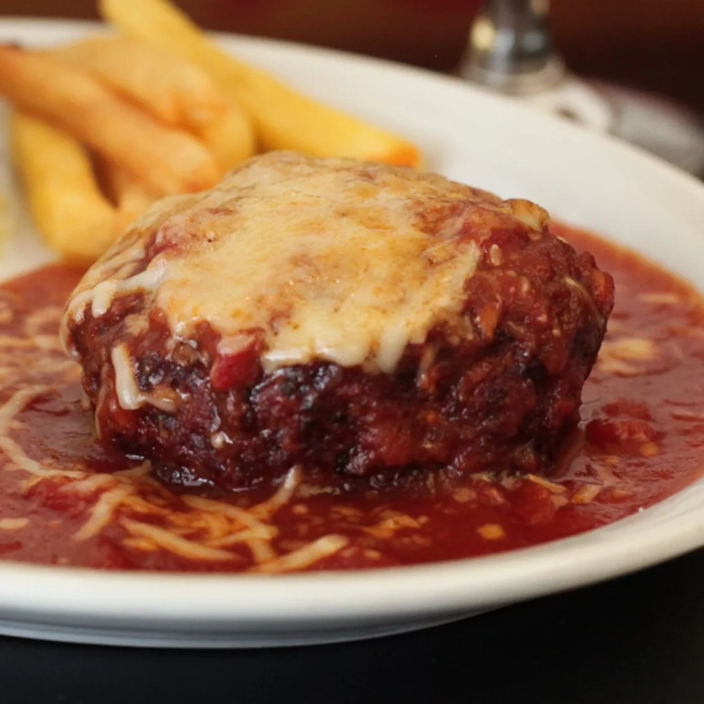
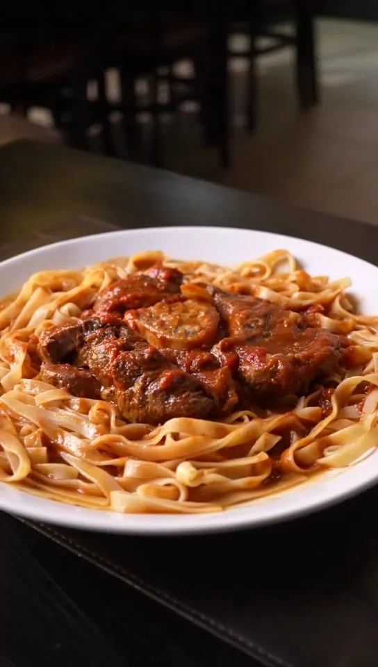
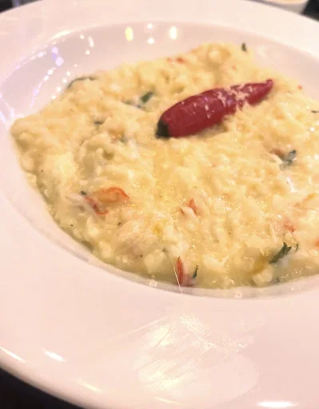
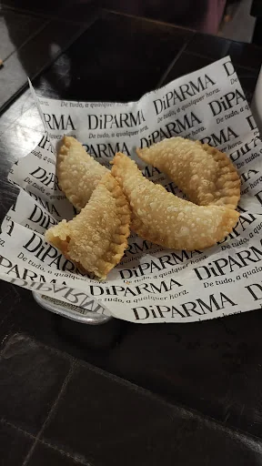
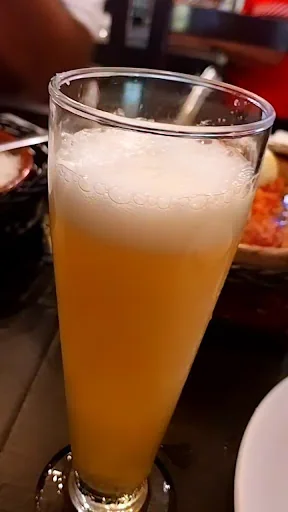
Um clássico reconhecido pelos clientes
O bacalhau ocupa
um lugar especial à mesa.
Entre os pratos mais elogiados, o bacalhau com natas se destaca como uma das especialidades associadas ao restaurante. Carnes, massas, risotos, petiscos e referências da cozinha alemã completam um cardápio amplo e preparado para diferentes preferências.
Consultar opções do cardápioExperiências compartilhadas
1.450 avaliações.
Histórias que passam pela mesa.
“
★★★★★
Experiência muito positiva, com excelente atendimento, ótima gastronomia e bom acesso. Também é possível levar o próprio vinho mediante o pagamento da taxa de rolha.
“
★★★★★
Cardápio elogiado pela variedade e pela qualidade dos preparos, com uma experiência considerada excelente.
“
★★★★★
Ambiente acolhedor, cardápio variado, atendimento atencioso e pratos bem servidos, com destaque para o sabor e a apresentação.
“
★★★★★
Cozinha muito elogiada, com destaque para o bacalhau com natas, o bom atendimento e a decoração de atmosfera intimista.
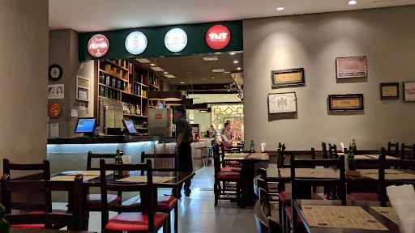
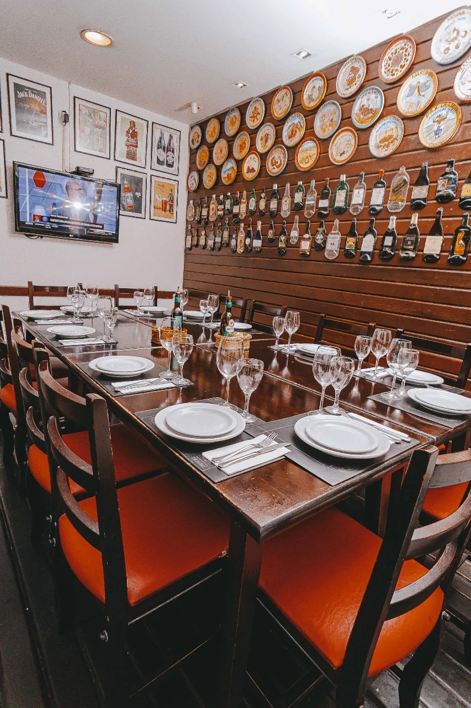
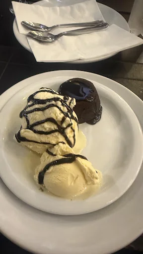
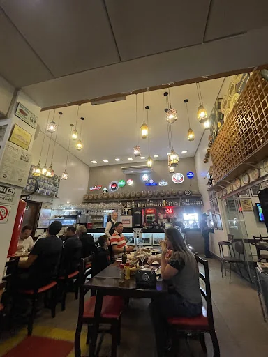
Localização
No bairro Quilombo,
em Cuiabá.
EndereçoAvenida Senador Filinto Müller, 788
Quilombo, Cuiabá, Mato Grosso
HoráriosDomingo e segunda-feira · 11:00 às 16:00
Terça-feira a sábado · 11:00 às 00:00
Contato(65) 99221-7674
DiPARMAQuilombo · Cuiabá